📖 처음 사용하시나요? 📖 First Time Here?
별도의 설치 없이 브라우저에서 바로 사용할 수 있습니다. 모든 데이터는 이 기기 안에만 저장되며 외부 서버로 전송되지 않습니다. No installation needed — works directly in your browser. All data is stored locally on this device and never sent to any external server.
계정 만들기 Create Your Account
처음 접속하면 아래와 같이 계정 생성 화면이 나타납니다. 아이디와 비밀번호를 설정하면 암호화된 로컬 저장소에 안전하게 보관됩니다. When you first visit, you'll see the account creation screen. Set your ID and password — they are securely stored in an encrypted local vault.
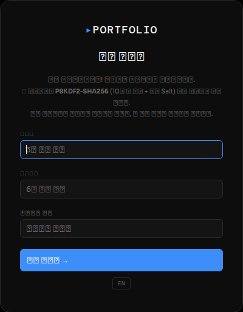
- 1아이디 입력Enter ID — 3자 이상, 영문/숫자 권장3+ characters, alphanumeric recommended
- 2비밀번호 설정Set Password — 6자 이상, 잊어버리면 복구 불가 (복구 기능 없음)6+ characters. Cannot be recovered if forgotten (no recovery feature)
- 3「계정 만들기 →」 클릭 → 자동으로 로그인되어 앱이 시작됩니다. — Automatically logs you in and starts the app.
로그인 / 로그아웃 Login / Logout
계정 생성 후 재방문하면 로그인 화면이 표시됩니다. 세션은 브라우저를 닫아도 유지됩니다. On subsequent visits you'll see the login screen. Your session persists even after closing the browser.
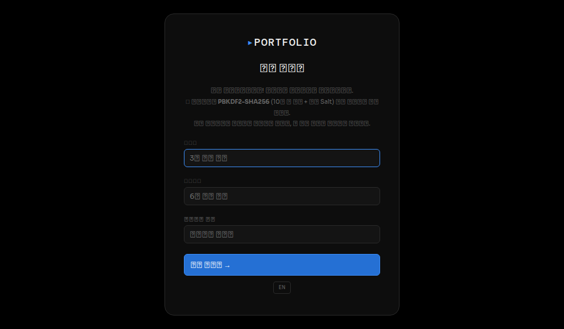
🖥️ 화면 구성 이해하기 🖥️ Understanding the Screen Layout
앱은 크게 세 부분으로 나뉩니다: 상단 바, 왼쪽 사이드바, 메인 콘텐츠 영역. The app has three main areas: Top bar, Left sidebar, and Main content area.
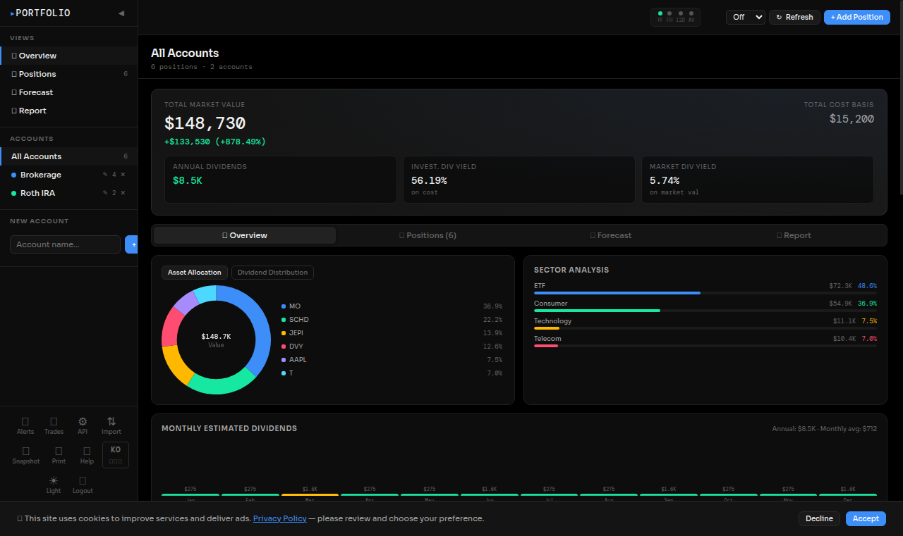
📌 상단 바 버튼 안내 📌 Top Bar Button Guide
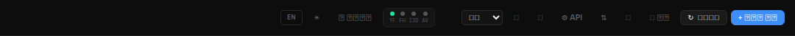
| 버튼Button | 기능Function |
|---|---|
| EN / KO | 언어 전환 (한국어 ↔ 영어)Switch language (Korean ↔ English) |
| ☀️ / 🌙 | 다크 / 라이트 테마 전환Toggle dark / light theme |
| ⎋ 로그아웃 | 현재 계정에서 로그아웃Log out of current account |
| 🔔 | 가격 알림 설정Price alert settings |
| 📊 | 매도 기록 관리Realized trade history |
| ⚙️ API | API 키 설정 (자동 가격 조회용)API key settings (for auto price fetching) |
| ⇅ | CSV/JSON 가져오기·내보내기CSV/JSON import & export |
| 📸 스냅샷 | 현재 포트폴리오 가치를 기록으로 저장Save current portfolio value as a snapshot |
| ↻ 새로고침 | 등록된 API로 실시간 가격 조회Refresh prices via configured APIs |
| + 포지션 추가 | 새 종목 추가Add a new position |
📌 사이드바 안내 📌 Sidebar Guide
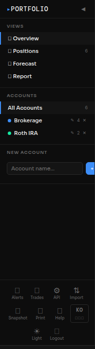
| 항목Item | 설명Description |
|---|---|
| 📊 Overview | 포트폴리오 요약 차트Portfolio summary & charts |
| 📋 Positions | 보유 종목 전체 목록Full holdings list |
| 📈 미래 예측 | 30년 자산 성장 시뮬레이션30-year wealth projection |
| 📋 리포트 | 세금 포함 종합 분석 리포트Comprehensive report with tax analysis |
| All Accounts | 모든 계좌 합산 보기View all accounts combined |
| Brokerage 등 | 계좌별 개별 보기View by individual account |
| New Account | 새 계좌 추가Add a new account |
📋 포지션 추가 · 수정 · 삭제 📋 Add · Edit · Delete Positions
「+ 포지션 추가」 버튼을 클릭하면 종목 검색 모달이 열립니다. 티커를 입력하면 자동완성 목록에서 선택할 수 있습니다. Click "+ Add Position" to open the position dialog. Type a ticker to see autocomplete suggestions.
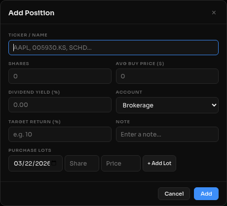
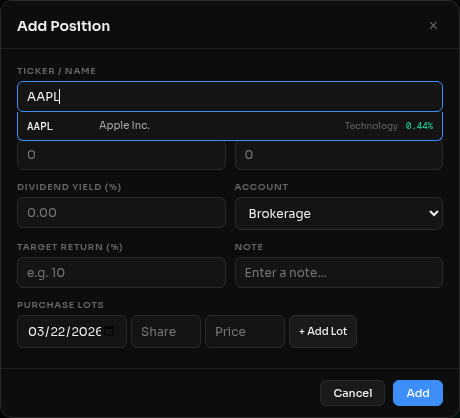
- 1티커 입력 — AAPL, SCHD, 005930.KS 형태로 입력. 한국 주식은 .KS (코스피) 또는 .KQ (코스닥) 접미사를 붙입니다.Enter ticker — e.g. AAPL, SCHD, 005930.KS. Korean stocks use .KS (KOSPI) or .KQ (KOSDAQ) suffix.
- 2수량 입력 — 보유 주수를 입력합니다.Enter shares — the number of shares you hold.
- 3평균 매수가 입력 — USD 또는 KRW 단위로 입력. 한국 주식은 원화(₩) 기준.Average buy price — in USD or KRW. Korean stocks use Korean Won (₩).
- 4배당수익률 입력 (선택) — 연간 배당수익률 %. 입력하면 배당 캘린더·리포트에 반영됩니다.Dividend yield (optional) — Annual yield %. Used in Dividend Calendar & Report.
- 5계좌 선택 — Brokerage, Roth IRA, 401k 등 원하는 계좌에 배정합니다.Select account — Assign to Brokerage, Roth IRA, 401k, etc.
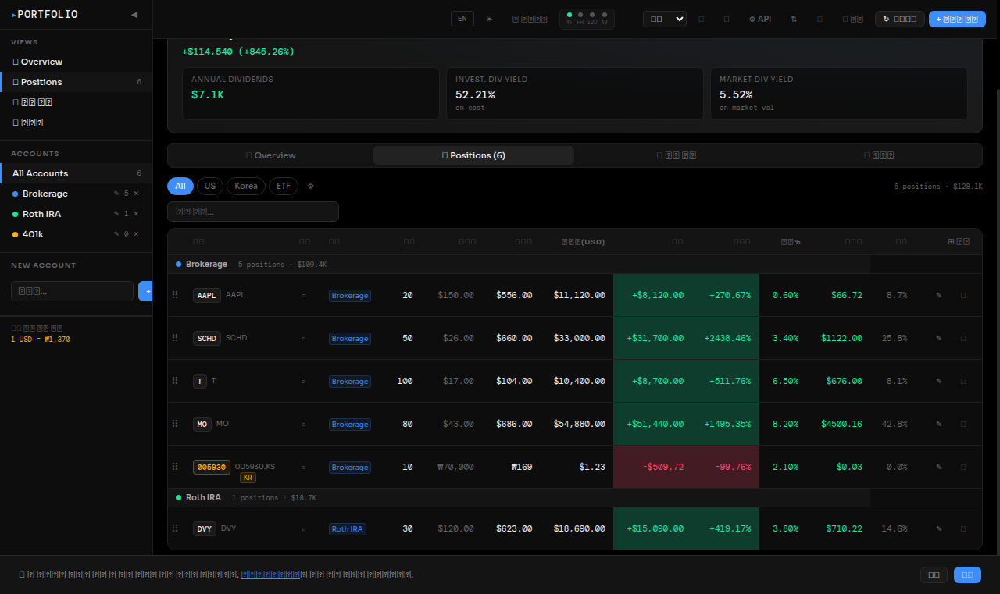
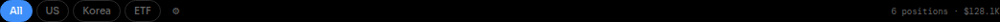
📊 Overview 탭 — 포트폴리오 한눈에 보기 📊 Overview Tab — Portfolio at a Glance
Overview 탭에서는 포트폴리오 총 평가액, 손익, 배당 통계와 함께 자산 배분·섹터 분석 차트를 확인할 수 있습니다. The Overview tab shows your total portfolio value, P&L, dividend stats, and allocation / sector analysis charts.
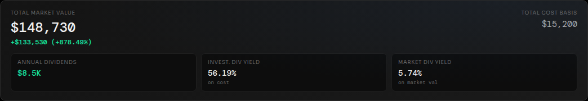
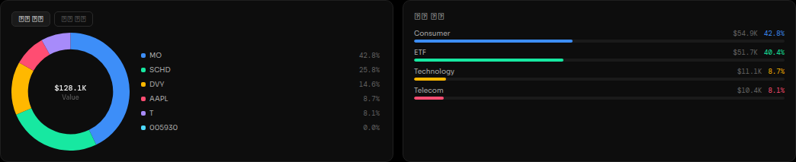
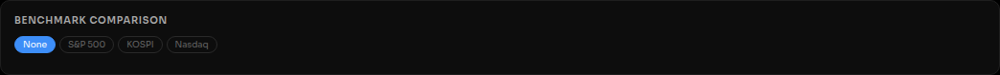
📅 배당 캘린더 — 24개월 예상 배당 📅 Dividend Calendar — 24-Month Dividend Forecast
현재 보유 종목의 배당수익률을 기반으로 향후 24개월 예상 월 배당금을 종목별 색상으로 스택 바 차트에 표시합니다. Shows estimated monthly dividends for the next 24 months, stacked by stock and color-coded by yield tier.
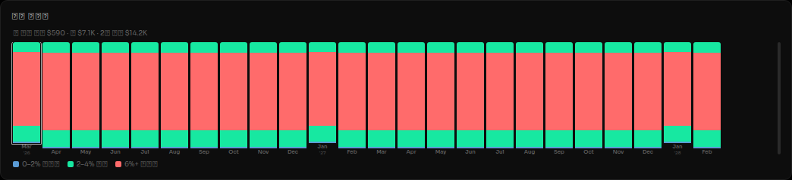
| 색상Color | 배당률 구간Yield Range | 종류Type |
|---|---|---|
| ■ 파랑 | 0 – 2% | 성장주Growth |
| ■ 초록 | 2 – 4% | 균형형Balanced |
| ■ 주황 | 4 – 6% | 배당주Income |
| ■ 빨강 | 6% + | 고배당High Yield |
📈 미래 자산 예측 — 10 / 20 / 30년 📈 Future Forecast — 10 / 20 / 30 Years
배당인상률과 주가상승률을 조절하여 10년, 20년, 30년 후 예상 자산을 시뮬레이션합니다. DRIP(배당 재투자)를 켜면 복리 효과를 계산합니다. Simulate your wealth at 10, 20, and 30 years by adjusting dividend growth and price growth rates. Enable DRIP to model compound reinvestment.
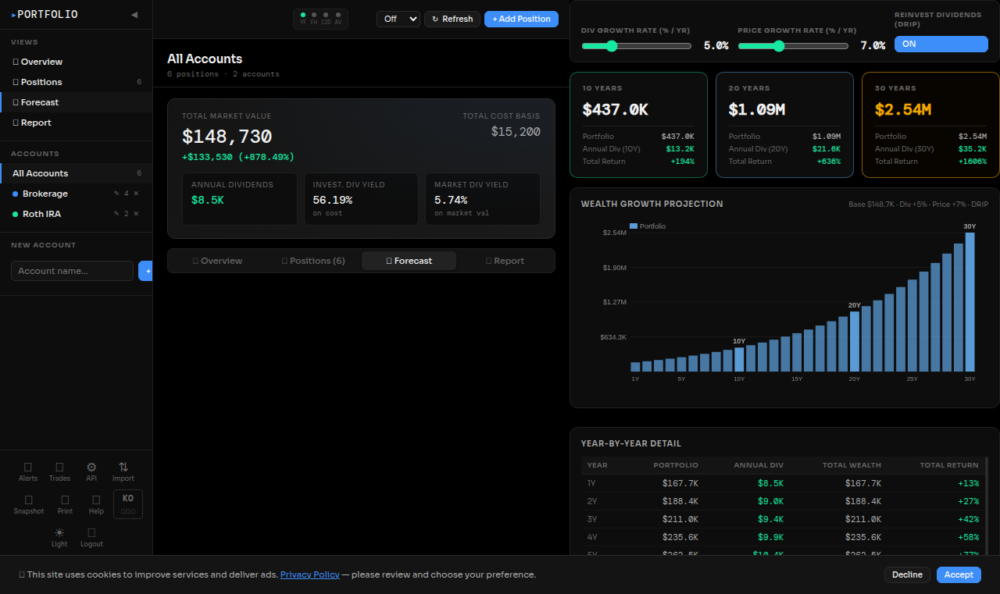
| 설정Setting | 기본값Default | 설명Description |
|---|---|---|
| 배당인상률Div Growth Rate | 5.0% | 매년 배당금이 증가하는 비율Annual rate at which dividends grow |
| 주가상승률Price Growth Rate | 7.0% | 매년 포트폴리오 가치 상승률 (S&P 500 역사 평균 ~10%)Annual portfolio value growth (S&P 500 historical avg ~10%) |
| DRIP | ON | 배당금을 매년 포트폴리오에 재투자하여 복리 효과 적용Reinvest dividends annually for compound growth effect |
📋 포트폴리오 종합 리포트 📋 Portfolio Comprehensive Report
6개 섹션으로 구성된 종합 리포트입니다. 세금까지 반영한 실질 수익을 확인하고 포트폴리오 건전성을 점검할 수 있습니다. A 6-section comprehensive report covering after-tax returns, sector allocation, FX risk, and portfolio health indicators.
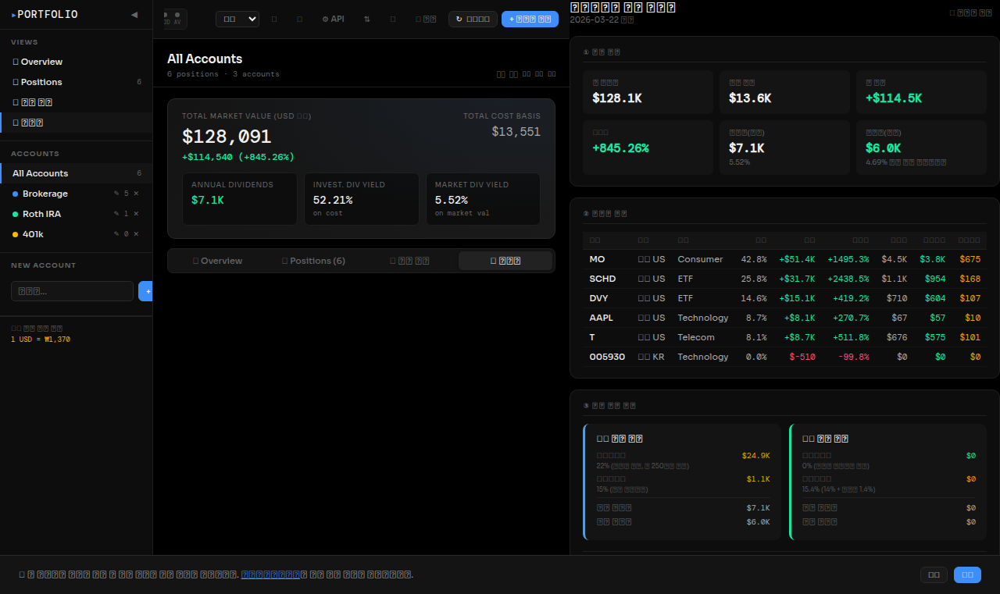
| # | 섹션Section | 내용Content |
|---|---|---|
| ① | 현황 요약Summary | 총 평가액, 투자원금, 총손익, 수익률, 연배당(세전/세후)Total value, cost basis, P&L, return, annual div (pre/post-tax) |
| ② | 종목별 분석Stock Analysis | 지역·섹터·비중·손익·세후 배당·세금 비용 테이블Per-stock: region, sector, weight, P&L, after-tax div, tax cost |
| ③ | 세후 수익 분석After-Tax Analysis | 미국/한국 주식 세금 별도 계산 + 세후 실효 배당수익률US/KR tax calculation + effective yield after all taxes |
| ④ | 섹터 & 지역 분산Allocation | 섹터별·지역별 비중 가로 막대그래프Sector and region allocation bar charts |
| ⑤ | 환율 리스크FX Risk | USD 노출 비중 + 환율 ±10%/±20% 시나리오USD exposure + ±10%/±20% FX impact scenarios |
| ⑥ | 포트폴리오 건전성Health | 집중도, 종목 수, 섹터 수, 배당비중 (양호/주의/위험)Concentration, # holdings, # sectors, dividend ratio (Good/Caution/Risk) |
💰 세후 수익 분석 (③ 섹션) 💰 After-Tax Analysis (Section ③)
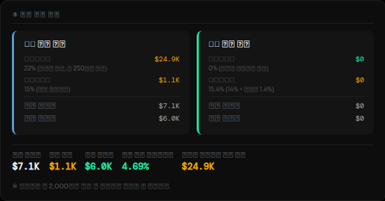
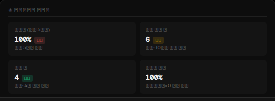
⚙️ API 설정 — 실시간 가격 조회 ⚙️ API Settings — Live Price Fetching
「⚙️ API」 버튼을 클릭하면 API 키 설정 화면이 열립니다. Yahoo Finance는 키 없이 자동으로 사용됩니다. Click "⚙️ API" to open the API key settings. Yahoo Finance works automatically without any key.
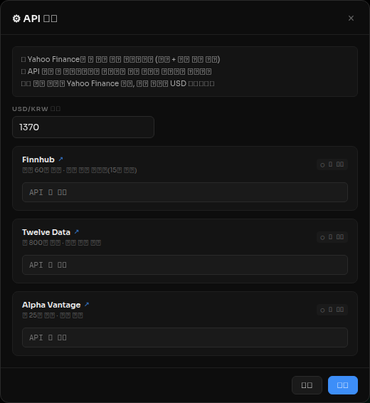
| 제공자Provider | 무료 한도Free Limit | 지원 종목Coverage | 키 필요Key Required |
|---|---|---|---|
| Yahoo Finance | 제한 없음 (15분 지연)Unlimited (15min delay) | 미국 + 한국주식US + Korean stocks | 불필요 |
| Finnhub | 분당 60회60 req/min | 미국주식US stocks | 필요 |
| Twelve Data | 일 800회800 req/day | 미국주식US stocks | 필요 |
| Alpha Vantage | 일 25회25 req/day | 미국주식US stocks | 필요 |
📤 가져오기 · 내보내기 📤 Import & Export
「⇅」 버튼으로 포지션 데이터를 CSV 또는 JSON으로 내보내거나 가져올 수 있습니다. 백업을 정기적으로 해두는 것을 권장합니다. Click "⇅" to export or import your position data as CSV or JSON. Regular backups are strongly recommended.
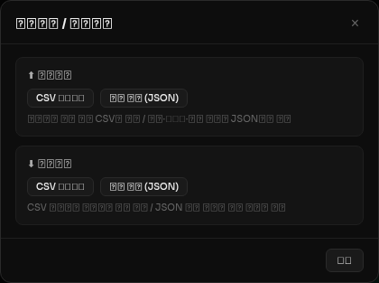
| 기능Feature | 형식Format | 내용Content |
|---|---|---|
| CSV 내보내기Export | .csv | 포지션 목록 (엑셀에서 열 수 있음)Position list (opens in Excel) |
| 전체 백업Full Backup | .json | 계좌, 포지션, API 설정, 스냅샷 전체All accounts, positions, API settings, snapshots |
| CSV 가져오기Import | .csv | CSV 파일에서 포지션 일괄 추가Bulk-add positions from a CSV file |
| 백업 복원Restore Backup | .json | JSON 백업 파일로 전체 복원 (기존 데이터 덮어씌움)Restore everything from a JSON backup (overwrites existing data) |
🔔 가격 알림 / 📊 매도 기록 🔔 Price Alerts / 📊 Trade History
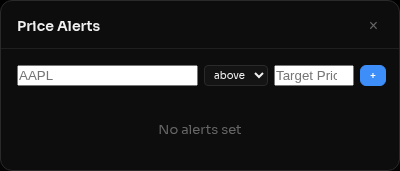
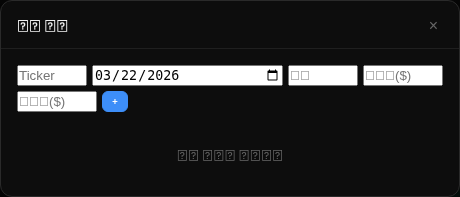
📱 모바일에서 사용하기 📱 Using on Mobile
iPhone SE(375px)부터 태블릿(1024px)까지 반응형으로 최적화되어 있습니다. 모바일에서는 사이드바가 기본 접힌 상태로 표시됩니다. Fully responsive from iPhone SE (375px) to tablet (1024px). On mobile, the sidebar starts collapsed.
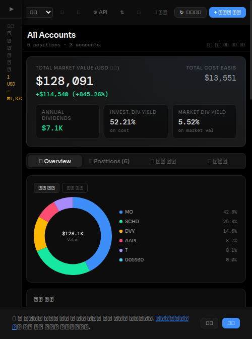
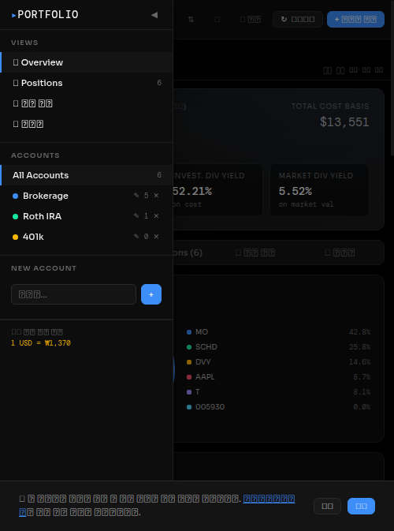
🔒 데이터 보안 🔒 Data Security
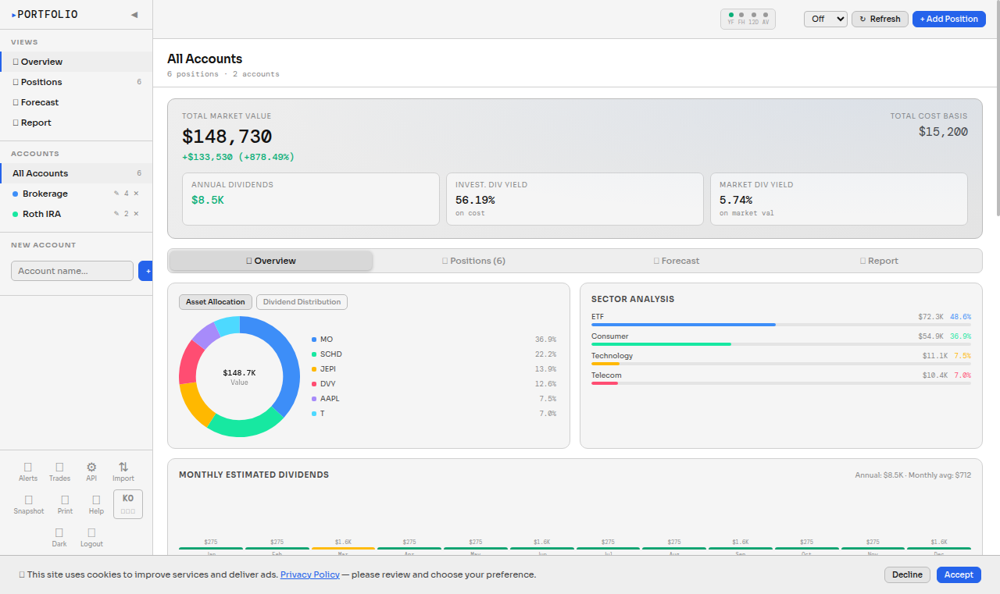
| 항목Item | 내용Detail |
|---|---|
| 비밀번호 저장Password Storage | PBKDF2-SHA256 (10만 회 반복 + 랜덤 Salt)(100,000 iterations + random salt) |
| 데이터 위치Data Location | 이 기기의 브라우저 localStorage에만 저장Stored only in this device's browser localStorage |
| 서버 전송Server Transmission | 없음 — 가격 조회 API 외 외부 서버 없음None — no external server except price APIs |
| 백업 권장Backup Recommended | 브라우저 데이터 삭제 시 모든 데이터 소실 → 정기 JSON 백업 권장Clearing browser data deletes everything → regular JSON backup recommended |
💡 한국 거주자 세금 안내 💡 Tax Guide for Korean Residents
리포트의 세후 수익 분석은 아래 세율을 기준으로 자동 계산됩니다. 실제 납세는 전문가 상담을 권장합니다. The after-tax analysis in the report uses the rates below. Consult a tax professional for actual tax filing.
| 구분Category | 🇺🇸 미국 주식US Stocks | 🇰🇷 한국 주식KR Stocks |
|---|---|---|
| 자본차익세 (양도세)Capital Gains Tax | 22% 연 250만원 기본공제 해외주식 합산 순이익 기준₩2.5M annual deduction Net overseas stock gains |
0% 상장사 소액주주 면제 (금투세 2024년 폐지)Exempt for small shareholders (Financial Investment Tax abolished 2024) |
| 배당소득세Dividend Withholding | 15% 한·미 조세협약 원천징수 (미국에서 자동 차감)US-Korea tax treaty rate (automatically withheld in the US) |
15.4% 14% + 지방소득세 1.4% (국내에서 원천징수)14% + 1.4% local tax (withheld domestically) |
| 종합과세Comprehensive Taxation | 금융소득(이자+배당) 합계가 연 2,000만원 초과 시 금융소득 전액 종합과세 대상. 구간별 세율(6~45%) 적용.If total financial income (interest + dividends) exceeds ₩20M/year, comprehensive taxation applies at progressive rates (6–45%). | |